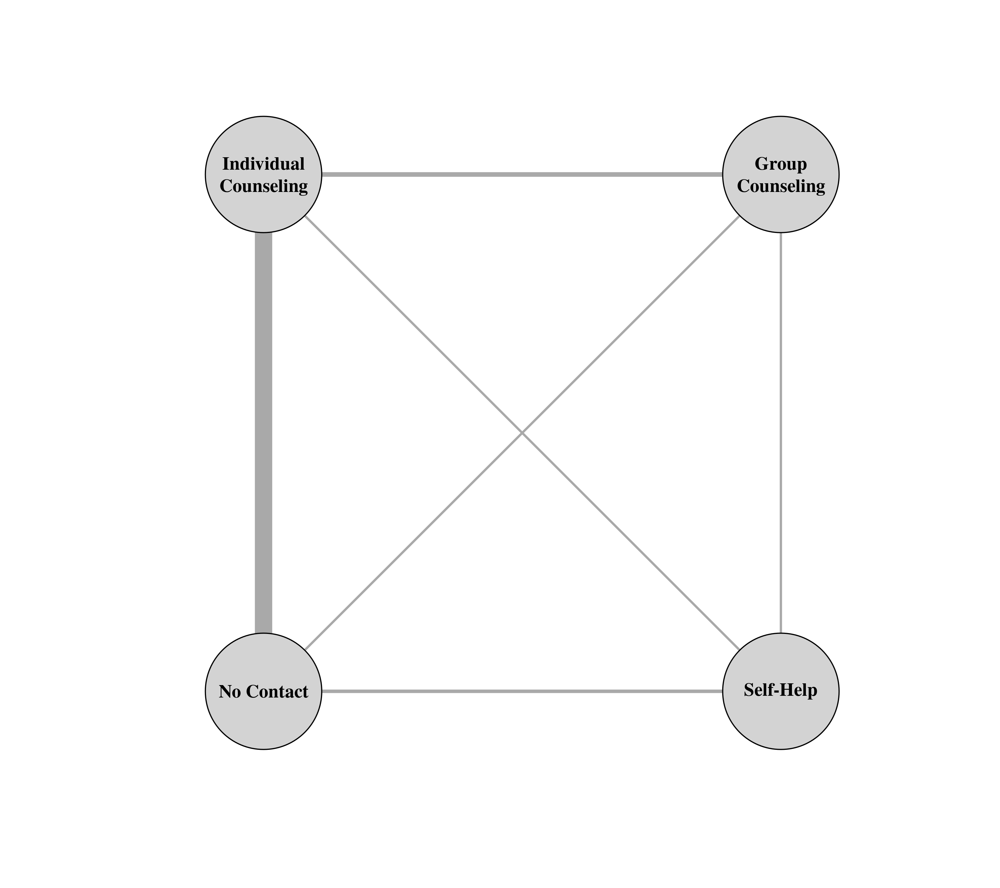

dat.hasselblad1998.RdResults from 24 studies on the effectiveness of various counseling types for smoking cessation.
dat.hasselblad1998The data frame contains the following columns:
| id | numeric | id number for each treatment arm |
| study | numeric | study id number |
| authors | character | study author(s) |
| year | numeric | publication year |
| trt | character | intervention group |
| xi | numeric | number of individuals abstinent |
| ni | numeric | number of individuals in group |
The dataset includes the results from 24 studies on the effectiveness of various counseling types for smoking cessation (i.e., self-help, individual counseling, group counseling, and no contact). The dataset indicates the total number of individuals within each study arm and the number that were abstinent from 6 to 12 months. The majority of the studies compared two interventions types against each other, while 2 studies compared three types against each other simultaneously.
The data can be used for a ‘network meta-analysis’ (also called a ‘mixed treatment comparison’). The code below shows how such an analysis can be conducted using an arm-based and a contrast-based model (see Salanti et al., 2008, for more details).
Hasselblad, V. (1998). Meta-analysis of multitreatment studies. Medical Decision Making, 18(1), 37–43. https://doi.org/10.1177/0272989X9801800110
Gleser, L. J., & Olkin, I. (2009). Stochastically dependent effect sizes. In H. Cooper, L. V. Hedges, & J. C. Valentine (Eds.), The handbook of research synthesis and meta-analysis (2nd ed., pp. 357–376). New York: Russell Sage Foundation.
Law, M., Jackson, D., Turner, R., Rhodes, K., & Viechtbauer, W. (2016). Two new methods to fit models for network meta-analysis with random inconsistency effects. BMC Medical Research Methodology, 16, 87. https://doi.org/10.1186/s12874-016-0184-5
Salanti, G., Higgins, J. P. T., Ades, A. E., & Ioannidis, J. P. A. (2008). Evaluation of networks of randomized trials. Statistical Methods in Medical Research, 17(3), 279–301. https://doi.org/10.1177/0962280207080643
medicine, psychology, smoking, odds ratios, network meta-analysis
### copy data into 'dat' and examine data
dat <- dat.hasselblad1998
dat
#> id study authors year trt xi ni
#> 1 1 1 Reid et al. 1974 no_contact 75 731
#> 2 2 1 Reid et al. 1974 ind_counseling 363 714
#> 3 3 2 Cottraux et al. 1983 no_contact 9 140
#> 4 4 2 Cottraux et al. 1983 ind_counseling 23 140
#> 5 5 2 Cottraux et al. 1983 grp_counseling 10 138
#> 6 6 3 Slama et al. 1990 no_contact 2 106
#> 7 7 3 Slama et al. 1990 ind_counseling 9 205
#> 8 8 4 Jamrozik et al. 1984 no_contact 58 549
#> 9 9 4 Jamrozik et al. 1984 ind_counseling 237 1561
#> 10 10 5 Rabkin et al. 1984 no_contact 0 33
#> 11 11 5 Rabkin et al. 1984 ind_counseling 9 48
#> 12 12 6 Decker and Evans 1989 self_help 20 49
#> 13 13 6 Decker and Evans 1989 ind_counseling 16 43
#> 14 14 7 Richmond et al. 1986 no_contact 3 100
#> 15 15 7 Richmond et al. 1986 ind_counseling 31 98
#> 16 16 8 Leung 1991 no_contact 1 31
#> 17 17 8 Leung 1991 ind_counseling 26 95
#> 18 18 9 Mothersill et al. 1988 self_help 11 78
#> 19 19 9 Mothersill et al. 1988 ind_counseling 12 85
#> 20 20 9 Mothersill et al. 1988 grp_counseling 29 170
#> 21 21 10 Langford et al. 1983 no_contact 6 39
#> 22 22 10 Langford et al. 1983 ind_counseling 17 77
#> 23 23 11 Gritz et al. 1992 no_contact 79 702
#> 24 24 11 Gritz et al. 1992 self_help 77 694
#> 25 25 12 Campbell et al. 1986 no_contact 18 671
#> 26 26 12 Campbell et al. 1986 self_help 21 535
#> 27 27 13 Sanders et al. 1989 no_contact 64 642
#> 28 28 13 Sanders et al. 1989 ind_counseling 107 761
#> 29 29 14 Hilleman et al. 1993 ind_counseling 12 76
#> 30 30 14 Hilleman et al. 1993 grp_counseling 20 74
#> 31 31 15 Gillams et al. 1984 ind_counseling 9 55
#> 32 32 15 Gillams et al. 1984 grp_counseling 3 26
#> 33 33 16 Mogielnicki et al. 1986 self_help 7 66
#> 34 34 16 Mogielnicki et al. 1986 grp_counseling 32 127
#> 35 35 17 Page et al. 1986 no_contact 5 62
#> 36 36 17 Page et al. 1986 ind_counseling 8 90
#> 37 37 18 Vetter and Ford 1990 no_contact 20 234
#> 38 38 18 Vetter and Ford 1990 ind_counseling 34 237
#> 39 39 19 Williams and Hall 1988 no_contact 0 20
#> 40 40 19 Williams and Hall 1988 grp_counseling 9 20
#> 41 41 20 Pallonen et al. 1994 no_contact 8 116
#> 42 42 20 Pallonen et al. 1994 self_help 19 149
#> 43 43 21 Russell et al. 1983 no_contact 95 1107
#> 44 44 21 Russell et al. 1983 ind_counseling 143 1031
#> 45 45 22 Stewart and Rosser 1982 no_contact 15 187
#> 46 46 22 Stewart and Rosser 1982 ind_counseling 36 504
#> 47 47 23 Russell et al. 1979 no_contact 78 584
#> 48 48 23 Russell et al. 1979 ind_counseling 73 675
#> 49 49 24 Kendrick et al. 1995 no_contact 69 1177
#> 50 50 24 Kendrick et al. 1995 ind_counseling 54 888
### load metafor package
library(metafor)
### create network graph ('igraph' package must be installed)
library(igraph, warn.conflicts=FALSE)
pairs <- data.frame(do.call(rbind,
sapply(split(dat$trt, dat$study), function(x) t(combn(x,2)))), stringsAsFactors=FALSE)
lvls <- c("no_contact", "self_help", "ind_counseling", "grp_counseling")
pairs$X1 <- factor(pairs$X1, levels=lvls)
pairs$X2 <- factor(pairs$X2, levels=lvls)
tab <- table(pairs[,1], pairs[,2])
tab # adjacency matrix
#>
#> no_contact self_help ind_counseling grp_counseling
#> no_contact 0 3 15 2
#> self_help 0 0 2 2
#> ind_counseling 0 0 0 4
#> grp_counseling 0 0 0 0
g <- graph_from_adjacency_matrix(tab, mode = "plus", weighted=TRUE, diag=FALSE)
vertex_attr(g, "name") <- c("No Contact", "Self-Help",
"Individual\nCounseling", "Group\nCounseling")
plot(g, edge.curved=FALSE, edge.width=E(g)$weight, layout=layout_on_grid,
vertex.size=45, vertex.color="lightgray", vertex.label.color="black", vertex.label.font=2)

### calculate log odds for each study arm
dat <- escalc(measure="PLO", xi=xi, ni=ni, add=1/2, to="all", data=dat)
dat
#>
#> id study authors year trt xi ni yi vi
#> 1 1 1 Reid et al. 1974 no_contact 75 731 -2.1628 0.0148
#> 2 2 1 Reid et al. 1974 ind_counseling 363 714 0.0336 0.0056
#> 3 3 2 Cottraux et al. 1983 no_contact 9 140 -2.6277 0.1129
#> 4 4 2 Cottraux et al. 1983 ind_counseling 23 140 -1.6094 0.0511
#> 5 5 2 Cottraux et al. 1983 grp_counseling 10 138 -2.5046 0.1030
#> 6 6 3 Slama et al. 1990 no_contact 2 106 -3.7329 0.4096
#> 7 7 3 Slama et al. 1990 ind_counseling 9 205 -3.0294 0.1104
#> 8 8 4 Jamrozik et al. 1984 no_contact 58 549 -2.1284 0.0191
#> 9 9 4 Jamrozik et al. 1984 ind_counseling 237 1561 -1.7186 0.0050
#> 10 10 5 Rabkin et al. 1984 no_contact 0 33 -4.2047 2.0299
#> 11 11 5 Rabkin et al. 1984 ind_counseling 9 48 -1.4250 0.1306
#> 12 12 6 Decker and Evans 1989 self_help 20 49 -0.3640 0.0827
#> 13 13 6 Decker and Evans 1989 ind_counseling 16 43 -0.5108 0.0970
#> 14 14 7 Richmond et al. 1986 no_contact 3 100 -3.3271 0.2960
#> 15 15 7 Richmond et al. 1986 ind_counseling 31 98 -0.7621 0.0466
#> 16 16 8 Leung 1991 no_contact 1 31 -3.0123 0.6995
#> 17 17 8 Leung 1991 ind_counseling 26 95 -0.9642 0.0521
#> 18 18 9 Mothersill et al. 1988 self_help 11 78 -1.7698 0.1018
#> 19 19 9 Mothersill et al. 1988 ind_counseling 12 85 -1.7716 0.0936
#> 20 20 9 Mothersill et al. 1988 grp_counseling 29 170 -1.5679 0.0410
#> 21 21 10 Langford et al. 1983 no_contact 6 39 -1.6397 0.1837
#> 22 22 10 Langford et al. 1983 ind_counseling 17 77 -1.2404 0.0737
#> 23 23 11 Gritz et al. 1992 no_contact 79 702 -2.0596 0.0142
#> 24 24 11 Gritz et al. 1992 self_help 77 694 -2.0754 0.0145
#> 25 25 12 Campbell et al. 1986 no_contact 18 671 -3.5646 0.0556
#> 26 26 12 Campbell et al. 1986 self_help 21 535 -3.1751 0.0485
#> 27 27 13 Sanders et al. 1989 no_contact 64 642 -2.1938 0.0172
#> 28 28 13 Sanders et al. 1989 ind_counseling 107 761 -1.8064 0.0108
#> 29 29 14 Hilleman et al. 1993 ind_counseling 12 76 -1.6409 0.0955
#> 30 30 14 Hilleman et al. 1993 grp_counseling 20 74 -0.9778 0.0671
#> 31 31 15 Gillams et al. 1984 ind_counseling 9 55 -1.5882 0.1268
#> 32 32 15 Gillams et al. 1984 grp_counseling 3 26 -1.9042 0.3283
#> 33 33 16 Mogielnicki et al. 1986 self_help 7 66 -2.0711 0.1501
#> 34 34 16 Mogielnicki et al. 1986 grp_counseling 32 127 -1.0779 0.0412
#> 35 35 17 Page et al. 1986 no_contact 5 62 -2.3470 0.1992
#> 36 36 17 Page et al. 1986 ind_counseling 8 90 -2.2727 0.1298
#> 37 37 18 Vetter and Ford 1990 no_contact 20 234 -2.3479 0.0534
#> 38 38 18 Vetter and Ford 1990 ind_counseling 34 237 -1.7747 0.0339
#> 39 39 19 Williams and Hall 1988 no_contact 0 20 -3.7136 2.0488
#> 40 40 19 Williams and Hall 1988 grp_counseling 9 20 -0.1911 0.1922
#> 41 41 20 Pallonen et al. 1994 no_contact 8 116 -2.5467 0.1269
#> 42 42 20 Pallonen et al. 1994 self_help 19 149 -1.9010 0.0589
#> 43 43 21 Russell et al. 1983 no_contact 95 1107 -2.3611 0.0115
#> 44 44 21 Russell et al. 1983 ind_counseling 143 1031 -1.8232 0.0081
#> 45 45 22 Stewart and Rosser 1982 no_contact 15 187 -2.4096 0.0703
#> 46 46 22 Stewart and Rosser 1982 ind_counseling 36 504 -2.5522 0.0295
#> 47 47 23 Russell et al. 1979 no_contact 78 584 -1.8644 0.0147
#> 48 48 23 Russell et al. 1979 ind_counseling 73 675 -2.1038 0.0153
#> 49 49 24 Kendrick et al. 1995 no_contact 69 1177 -2.7694 0.0153
#> 50 50 24 Kendrick et al. 1995 ind_counseling 54 888 -2.7286 0.0195
#>
### convert trt variable to factor with desired ordering of levels
dat$trt <- factor(dat$trt, levels=c("no_contact", "self_help", "ind_counseling", "grp_counseling"))
### add a space before each level (this makes the output a bit more legible)
levels(dat$trt) <- paste0(" ", levels(dat$trt))
### network meta-analysis using an arm-based model with fixed study effects
### by setting rho=1/2, tau^2 reflects the amount of heterogeneity for all treatment comparisons
res <- rma.mv(yi, vi, mods = ~ 0 + factor(study) + trt,
random = ~ trt | study, rho=1/2, data=dat, btt="trt")
res
#>
#> Multivariate Meta-Analysis Model (k = 50; method: REML)
#>
#> Variance Components:
#>
#> outer factor: study (nlvls = 24)
#> inner factor: trt (nlvls = 4)
#>
#> estim sqrt fixed
#> tau^2 0.4324 0.6575 no
#> rho 0.5000 yes
#>
#> Test for Residual Heterogeneity:
#> QE(df = 23) = 202.3334, p-val < .0001
#>
#> Test of Moderators (coefficients 25:27):
#> QM(df = 3) = 14.2278, p-val = 0.0026
#>
#> Model Results:
#>
#> estimate se zval pval ci.lb ci.ub
#> factor(study)1 -1.3925 0.5820 -2.3926 0.0167 -2.5333 -0.2518 *
#> factor(study)2 -2.7302 0.5842 -4.6731 <.0001 -3.8753 -1.5851 ***
#> factor(study)3 -3.7217 0.6681 -5.5703 <.0001 -5.0312 -2.4121 ***
#> factor(study)4 -2.2710 0.5829 -3.8958 <.0001 -3.4136 -1.1285 ***
#> factor(study)5 -2.3914 0.7374 -3.2430 0.0012 -3.8367 -0.9461 **
#> factor(study)6 -0.9698 0.6421 -1.5104 0.1309 -2.2284 0.2887
#> factor(study)7 -2.0855 0.6369 -3.2744 0.0011 -3.3339 -0.8372 **
#> factor(study)8 -1.9592 0.6674 -2.9357 0.0033 -3.2672 -0.6512 **
#> factor(study)9 -2.3487 0.6032 -3.8936 <.0001 -3.5310 -1.1664 ***
#> factor(study)10 -1.8062 0.6296 -2.8688 0.0041 -3.0402 -0.5722 **
#> factor(study)11 -2.2618 0.5978 -3.7835 0.0002 -3.4334 -1.0901 ***
#> factor(study)12 -3.5643 0.6139 -5.8058 <.0001 -4.7675 -2.3610 ***
#> factor(study)13 -2.3454 0.5836 -4.0188 <.0001 -3.4892 -1.2015 ***
#> factor(study)14 -2.0624 0.6492 -3.1767 0.0015 -3.3348 -0.7899 **
#> factor(study)15 -2.4575 0.6868 -3.5781 0.0003 -3.8037 -1.1114 ***
#> factor(study)16 -2.1438 0.6707 -3.1964 0.0014 -3.4583 -0.8293 **
#> factor(study)17 -2.6810 0.6448 -4.1581 <.0001 -3.9447 -1.4173 ***
#> factor(study)18 -2.4066 0.5964 -4.0353 <.0001 -3.5755 -1.2377 ***
#> factor(study)19 -1.4441 0.8108 -1.7811 0.0749 -3.0331 0.1450 .
#> factor(study)20 -2.4041 0.6331 -3.7974 0.0001 -3.6450 -1.1633 ***
#> factor(study)21 -2.4359 0.5817 -4.1877 <.0001 -3.5760 -1.2958 ***
#> factor(study)22 -2.8559 0.5991 -4.7667 <.0001 -4.0301 -1.6816 ***
#> factor(study)23 -2.3268 0.5838 -3.9857 <.0001 -3.4710 -1.1826 ***
#> factor(study)24 -3.0893 0.5847 -5.2836 <.0001 -4.2353 -1.9433 ***
#> trt self_help 0.3888 0.3221 1.2070 0.2274 -0.2426 1.0202
#> trt ind_counseling 0.6864 0.1904 3.6055 0.0003 0.3133 1.0596 ***
#> trt grp_counseling 0.8438 0.3641 2.3176 0.0205 0.1302 1.5574 *
#>
#> ---
#> Signif. codes: 0 ‘***’ 0.001 ‘**’ 0.01 ‘*’ 0.05 ‘.’ 0.1 ‘ ’ 1
#>
### all pairwise odds ratios of interventions versus no contact
predict(res, newmods=cbind(matrix(0, nrow=3, ncol=24), diag(3)),
intercept=FALSE, transf=exp, digits=2)
#> Warning: Arguments 'intercept' ignored when 'newmods' includes 'p' columns.
#>
#> pred ci.lb ci.ub pi.lb pi.ub
#> 1 1.48 0.78 2.77 0.35 6.20
#> 2 1.99 1.37 2.89 0.52 7.60
#> 3 2.33 1.14 4.75 0.53 10.14
#>
### all pairwise odds ratios comparing interventions (ic vs sh, gc vs sh, and gc vs ic)
predict(res, newmods=cbind(matrix(0, nrow=3, ncol=24), rbind(c(-1,1,0), c(-1,0,1), c(0,-1,1))),
intercept=FALSE, transf=exp, digits=2)
#> Warning: Arguments 'intercept' ignored when 'newmods' includes 'p' columns.
#>
#> pred ci.lb ci.ub pi.lb pi.ub
#> 1 1.35 0.70 2.58 0.32 5.71
#> 2 1.58 0.72 3.43 0.35 7.10
#> 3 1.17 0.59 2.30 0.27 5.02
#>
### forest plot of ORs of interventions versus no contact
forest(c(0,res$beta[25:27]), sei=c(0,res$se[25:27]), psize=1, xlim=c(-3,4), digits=c(2,1), efac=2,
slab=c("No Contact", "Self-Help", "Individual Counseling", "Group Counseling"),
atransf=exp, at=log(c(0.5, 1, 2, 4, 8)), xlab="Odds Ratio for Intervention vs. No Contact",
header=c("Intervention", "Odds Ratio [95% CI]"))
############################################################################
### restructure dataset to a contrast-based format
dat <- to.wide(dat.hasselblad1998, study="study", grp="trt", ref="no_contact", grpvars=6:7)
### calculate log odds ratios for each treatment comparison
dat <- escalc(measure="OR", ai=xi.1, n1i=ni.1,
ci=xi.2, n2i=ni.2, add=1/2, to="all", data=dat)
dat
#>
#> id study authors year trt.1 xi.1 ni.1 trt.2 xi.2 ni.2 comp design
#> 1 1 1 Reid et al. 1974 ind_counseling 363 714 no_contact 75 731 in-no in-no
#> 2 2 2 Cottraux et al. 1983 grp_counseling 10 138 no_contact 9 140 gr-no gr-in-no
#> 3 3 2 Cottraux et al. 1983 ind_counseling 23 140 no_contact 9 140 in-no gr-in-no
#> 4 4 3 Slama et al. 1990 ind_counseling 9 205 no_contact 2 106 in-no in-no
#> 5 5 4 Jamrozik et al. 1984 ind_counseling 237 1561 no_contact 58 549 in-no in-no
#> 6 6 5 Rabkin et al. 1984 ind_counseling 9 48 no_contact 0 33 in-no in-no
#> 7 7 6 Decker and Evans 1989 ind_counseling 16 43 self_help 20 49 in-se in-se
#> 8 8 7 Richmond et al. 1986 ind_counseling 31 98 no_contact 3 100 in-no in-no
#> 9 9 8 Leung 1991 ind_counseling 26 95 no_contact 1 31 in-no in-no
#> 10 10 9 Mothersill et al. 1988 grp_counseling 29 170 self_help 11 78 gr-se gr-in-se
#> 11 11 9 Mothersill et al. 1988 ind_counseling 12 85 self_help 11 78 in-se gr-in-se
#> 12 12 10 Langford et al. 1983 ind_counseling 17 77 no_contact 6 39 in-no in-no
#> 13 13 11 Gritz et al. 1992 self_help 77 694 no_contact 79 702 se-no se-no
#> 14 14 12 Campbell et al. 1986 self_help 21 535 no_contact 18 671 se-no se-no
#> 15 15 13 Sanders et al. 1989 ind_counseling 107 761 no_contact 64 642 in-no in-no
#> 16 16 14 Hilleman et al. 1993 grp_counseling 20 74 ind_counseling 12 76 gr-in gr-in
#> 17 17 15 Gillams et al. 1984 grp_counseling 3 26 ind_counseling 9 55 gr-in gr-in
#> 18 18 16 Mogielnicki et al. 1986 grp_counseling 32 127 self_help 7 66 gr-se gr-se
#> 19 19 17 Page et al. 1986 ind_counseling 8 90 no_contact 5 62 in-no in-no
#> 20 20 18 Vetter and Ford 1990 ind_counseling 34 237 no_contact 20 234 in-no in-no
#> 21 21 19 Williams and Hall 1988 grp_counseling 9 20 no_contact 0 20 gr-no gr-no
#> 22 22 20 Pallonen et al. 1994 self_help 19 149 no_contact 8 116 se-no se-no
#> 23 23 21 Russell et al. 1983 ind_counseling 143 1031 no_contact 95 1107 in-no in-no
#> 24 24 22 Stewart and Rosser 1982 ind_counseling 36 504 no_contact 15 187 in-no in-no
#> 25 25 23 Russell et al. 1979 ind_counseling 73 675 no_contact 78 584 in-no in-no
#> 26 26 24 Kendrick et al. 1995 ind_counseling 54 888 no_contact 69 1177 in-no in-no
#> yi vi
#> 1 2.1964 0.0204
#> 2 0.1232 0.2159
#> 3 1.0183 0.1639
#> 4 0.7035 0.5199
#> 5 0.4098 0.0241
#> 6 2.7797 2.1604
#> 7 -0.1469 0.1796
#> 8 2.5649 0.3425
#> 9 2.0481 0.7516
#> 10 0.2019 0.1427
#> 11 -0.0018 0.1954
#> 12 0.3993 0.2574
#> 13 -0.0158 0.0287
#> 14 0.3894 0.1040
#> 15 0.3874 0.0281
#> 16 0.6632 0.1626
#> 17 -0.3161 0.4550
#> 18 0.9932 0.1914
#> 19 0.0743 0.3290
#> 20 0.5732 0.0873
#> 21 3.5225 2.2410
#> 22 0.6457 0.1858
#> 23 0.5379 0.0196
#> 24 -0.1427 0.0998
#> 25 -0.2394 0.0300
#> 26 0.0408 0.0348
#>
### calculate the variance-covariance matrix of the log odds ratios for multitreatment studies
### see Gleser & Olkin (2009), equation (19.11), for the covariance equation
calc.v <- function(x) {
v <- matrix(1/(x$xi.2[1] + 1/2) + 1/(x$ni.2[1] - x$xi.2[1] + 1/2), nrow=nrow(x), ncol=nrow(x))
diag(v) <- x$vi
v
}
V <- bldiag(lapply(split(dat, dat$study), calc.v))
### add contrast matrix to dataset
dat <- contrmat(dat, grp1="trt.1", grp2="trt.2")
dat
#>
#> id study authors year trt.1 xi.1 ni.1 trt.2 xi.2 ni.2 comp design
#> 1 1 1 Reid et al. 1974 ind_counseling 363 714 no_contact 75 731 in-no in-no
#> 2 2 2 Cottraux et al. 1983 grp_counseling 10 138 no_contact 9 140 gr-no gr-in-no
#> 3 3 2 Cottraux et al. 1983 ind_counseling 23 140 no_contact 9 140 in-no gr-in-no
#> 4 4 3 Slama et al. 1990 ind_counseling 9 205 no_contact 2 106 in-no in-no
#> 5 5 4 Jamrozik et al. 1984 ind_counseling 237 1561 no_contact 58 549 in-no in-no
#> 6 6 5 Rabkin et al. 1984 ind_counseling 9 48 no_contact 0 33 in-no in-no
#> 7 7 6 Decker and Evans 1989 ind_counseling 16 43 self_help 20 49 in-se in-se
#> 8 8 7 Richmond et al. 1986 ind_counseling 31 98 no_contact 3 100 in-no in-no
#> 9 9 8 Leung 1991 ind_counseling 26 95 no_contact 1 31 in-no in-no
#> 10 10 9 Mothersill et al. 1988 grp_counseling 29 170 self_help 11 78 gr-se gr-in-se
#> 11 11 9 Mothersill et al. 1988 ind_counseling 12 85 self_help 11 78 in-se gr-in-se
#> 12 12 10 Langford et al. 1983 ind_counseling 17 77 no_contact 6 39 in-no in-no
#> 13 13 11 Gritz et al. 1992 self_help 77 694 no_contact 79 702 se-no se-no
#> 14 14 12 Campbell et al. 1986 self_help 21 535 no_contact 18 671 se-no se-no
#> 15 15 13 Sanders et al. 1989 ind_counseling 107 761 no_contact 64 642 in-no in-no
#> 16 16 14 Hilleman et al. 1993 grp_counseling 20 74 ind_counseling 12 76 gr-in gr-in
#> 17 17 15 Gillams et al. 1984 grp_counseling 3 26 ind_counseling 9 55 gr-in gr-in
#> 18 18 16 Mogielnicki et al. 1986 grp_counseling 32 127 self_help 7 66 gr-se gr-se
#> 19 19 17 Page et al. 1986 ind_counseling 8 90 no_contact 5 62 in-no in-no
#> 20 20 18 Vetter and Ford 1990 ind_counseling 34 237 no_contact 20 234 in-no in-no
#> 21 21 19 Williams and Hall 1988 grp_counseling 9 20 no_contact 0 20 gr-no gr-no
#> 22 22 20 Pallonen et al. 1994 self_help 19 149 no_contact 8 116 se-no se-no
#> 23 23 21 Russell et al. 1983 ind_counseling 143 1031 no_contact 95 1107 in-no in-no
#> 24 24 22 Stewart and Rosser 1982 ind_counseling 36 504 no_contact 15 187 in-no in-no
#> 25 25 23 Russell et al. 1979 ind_counseling 73 675 no_contact 78 584 in-no in-no
#> 26 26 24 Kendrick et al. 1995 ind_counseling 54 888 no_contact 69 1177 in-no in-no
#> yi vi grp_counseling ind_counseling self_help no_contact
#> 1 2.1964 0.0204 0 1 0 -1
#> 2 0.1232 0.2159 1 0 0 -1
#> 3 1.0183 0.1639 0 1 0 -1
#> 4 0.7035 0.5199 0 1 0 -1
#> 5 0.4098 0.0241 0 1 0 -1
#> 6 2.7797 2.1604 0 1 0 -1
#> 7 -0.1469 0.1796 0 1 -1 0
#> 8 2.5649 0.3425 0 1 0 -1
#> 9 2.0481 0.7516 0 1 0 -1
#> 10 0.2019 0.1427 1 0 -1 0
#> 11 -0.0018 0.1954 0 1 -1 0
#> 12 0.3993 0.2574 0 1 0 -1
#> 13 -0.0158 0.0287 0 0 1 -1
#> 14 0.3894 0.1040 0 0 1 -1
#> 15 0.3874 0.0281 0 1 0 -1
#> 16 0.6632 0.1626 1 -1 0 0
#> 17 -0.3161 0.4550 1 -1 0 0
#> 18 0.9932 0.1914 1 0 -1 0
#> 19 0.0743 0.3290 0 1 0 -1
#> 20 0.5732 0.0873 0 1 0 -1
#> 21 3.5225 2.2410 1 0 0 -1
#> 22 0.6457 0.1858 0 0 1 -1
#> 23 0.5379 0.0196 0 1 0 -1
#> 24 -0.1427 0.0998 0 1 0 -1
#> 25 -0.2394 0.0300 0 1 0 -1
#> 26 0.0408 0.0348 0 1 0 -1
#>
### network meta-analysis using a contrast-based random-effects model
### by setting rho=1/2, tau^2 reflects the amount of heterogeneity for all treatment comparisons
res <- rma.mv(yi, V, mods = ~ 0 + self_help + ind_counseling + grp_counseling,
random = ~ comp | study, rho=1/2, data=dat)
res
#>
#> Multivariate Meta-Analysis Model (k = 26; method: REML)
#>
#> Variance Components:
#>
#> outer factor: study (nlvls = 24)
#> inner factor: comp (nlvls = 6)
#>
#> estim sqrt fixed
#> tau^2 0.4324 0.6575 no
#> rho 0.5000 yes
#>
#> Test for Residual Heterogeneity:
#> QE(df = 23) = 202.3334, p-val < .0001
#>
#> Test of Moderators (coefficients 1:3):
#> QM(df = 3) = 14.2278, p-val = 0.0026
#>
#> Model Results:
#>
#> estimate se zval pval ci.lb ci.ub
#> self_help 0.3888 0.3221 1.2070 0.2274 -0.2426 1.0202
#> ind_counseling 0.6864 0.1904 3.6055 0.0003 0.3133 1.0596 ***
#> grp_counseling 0.8438 0.3641 2.3176 0.0205 0.1302 1.5574 *
#>
#> ---
#> Signif. codes: 0 ‘***’ 0.001 ‘**’ 0.01 ‘*’ 0.05 ‘.’ 0.1 ‘ ’ 1
#>
### predicted odds ratios of interventions versus no contact
predict(res, newmods=diag(3), transf=exp, digits=2)
#>
#> pred ci.lb ci.ub pi.lb pi.ub
#> 1 1.48 0.78 2.77 0.35 6.20
#> 2 1.99 1.37 2.89 0.52 7.60
#> 3 2.33 1.14 4.75 0.53 10.14
#>
### fit random inconsistency effects model (see Law et al., 2016)
res <- rma.mv(yi, V, mods = ~ 0 + self_help + ind_counseling + grp_counseling,
random = list(~ comp | study, ~ comp | design), rho=1/2, phi=1/2, data=dat)
res
#>
#> Multivariate Meta-Analysis Model (k = 26; method: REML)
#>
#> Variance Components:
#>
#> outer factor: study (nlvls = 24)
#> inner factor: comp (nlvls = 6)
#>
#> estim sqrt fixed
#> tau^2 0.4324 0.6575 no
#> rho 0.5000 yes
#>
#> outer factor: design (nlvls = 8)
#> inner factor: comp (nlvls = 6)
#>
#> estim sqrt fixed
#> gamma^2 0.0000 0.0000 no
#> phi 0.5000 yes
#>
#> Test for Residual Heterogeneity:
#> QE(df = 23) = 202.3334, p-val < .0001
#>
#> Test of Moderators (coefficients 1:3):
#> QM(df = 3) = 14.2278, p-val = 0.0026
#>
#> Model Results:
#>
#> estimate se zval pval ci.lb ci.ub
#> self_help 0.3888 0.3221 1.2070 0.2274 -0.2426 1.0202
#> ind_counseling 0.6864 0.1904 3.6055 0.0003 0.3133 1.0596 ***
#> grp_counseling 0.8438 0.3641 2.3176 0.0205 0.1302 1.5574 *
#>
#> ---
#> Signif. codes: 0 ‘***’ 0.001 ‘**’ 0.01 ‘*’ 0.05 ‘.’ 0.1 ‘ ’ 1
#>